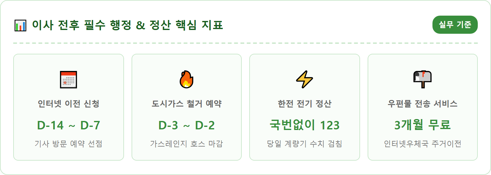
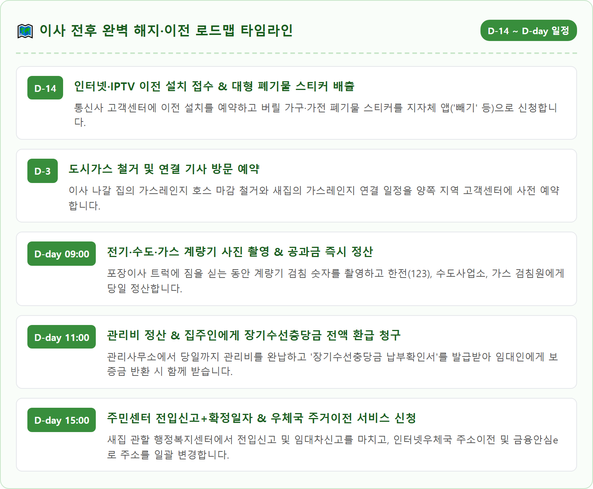
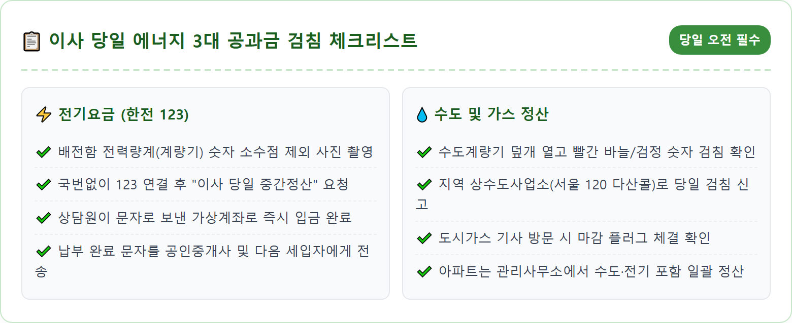
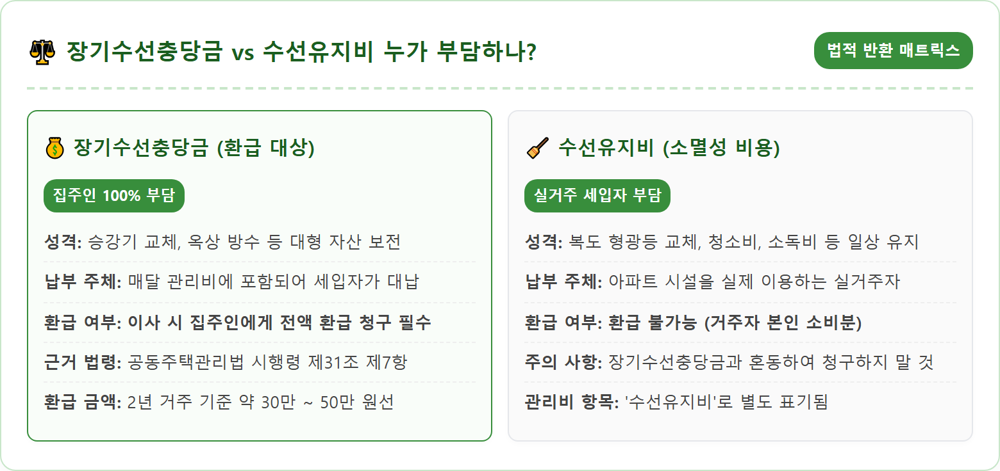
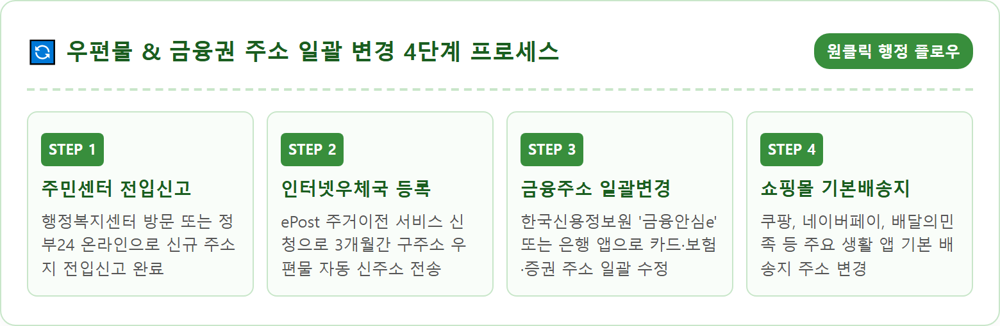
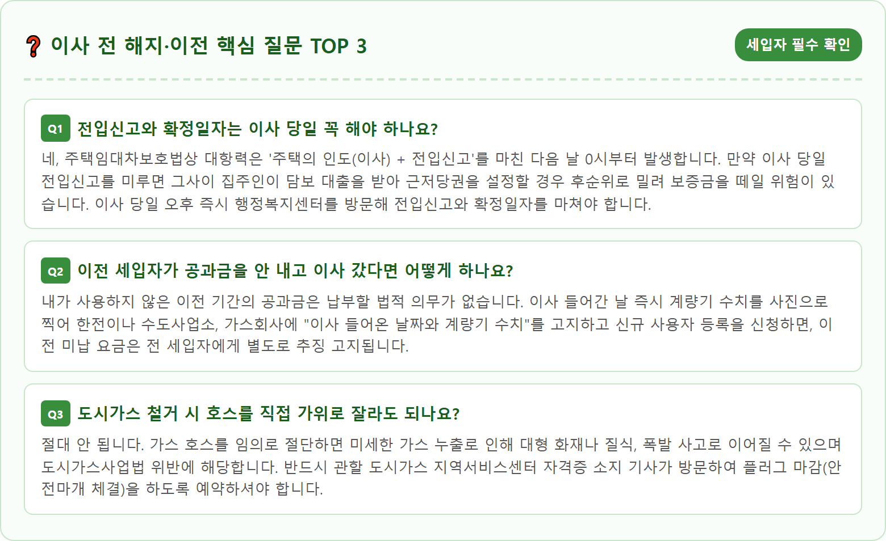

A high-angle realistic photograph of a bright, sunlit modern apartment living room with neatly stacked moving cardboard boxes, packing tape, and an organized moving checklist on a wooden table. On the table sits a smartphone displaying utility bills and address transfer apps, a set of apartment keys, and an organized document folder. Bright natural light pouring through large clean windows, tidy, stress-free moving atmosphere, ultra-high resolution, 8k, realistic domestic interior textures, 1:1 aspect ratio.





